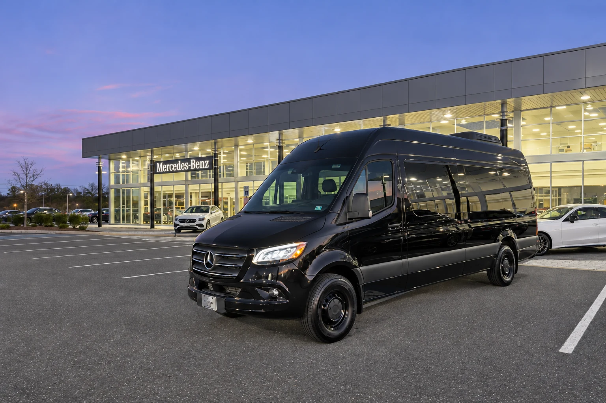

Boston Party Van | Private group rides
Ski & snowboard trips from Boston
Bring the group and the gear. Private Boston-to-mountain transportation with 14 passenger seats, a dedicated driver, and plenty of space for skis and winter bags.
Available now. Closed Dec 25-Jan 4.
A private ski-day ride from Boston
Start your ski or snowboard day together in our high-roof Mercedes-Benz Sprinter. Instead of coordinating several cars, your group has one pickup plan, a dedicated driver, and a scheduled return. We build the transportation around your mountain, lesson time, and preferred day on the slopes.
Ski trips work for friends, families, small company outings, and groups with a mix of skiers and snowboarders. Request a Greater Boston pickup and tell us whether you want a day trip, a mountain drop-off, or a multi-day itinerary. Exact route feasibility and availability are confirmed before booking.
Room for skis, snowboards, and winter gear
There is plenty of room for skis, snowboards, boots, helmets, and winter bags. The van has 14 passenger seats plus a separate driver seat, with space to plan the load around your group.
Include your passenger count, number of skis or boards, and any overnight luggage in your inquiry. That lets us confirm the full seating and equipment arrangement before the trip, especially when everyone is bringing both sports equipment and weekend bags.
New England mountain routes
Request transportation from Boston to your chosen Massachusetts, New Hampshire, or Vermont mountain. Examples include Wachusett Mountain in Princeton, Massachusetts, and Loon Mountain in Lincoln, New Hampshire. Longer mountain journeys and overnight returns receive an itinerary-specific quote.
Tell us your preferred arrival time rather than assuming a fixed driving time. Winter roads, traffic, loading, resort access, and weather all affect the plan. Mountain operating dates, lift tickets, rentals, and lessons must be confirmed directly with the resort. Transportation does not include resort admission.
Wachusett Mountain operating information | Loon Mountain operating information
From early pickup to the return ride
For a multi-day ski weekend, send the service end date, lodging location, passenger and bag counts, and all required driving windows. We do not accept itineraries that overlap December 25, 2026 through January 4, 2027. Trips outside those dates can be requested now.
- One agreed pickup hub or a planned local pickup loop
- Time to load skis, boards, boots, and bags before departure
- A resort drop-off coordinated around your tickets or lesson time
- A planned return meeting point and departure time
- Optional meal or apres-ski stops included in the quoted itinerary
Frequently asked questions
Can we bring our own skis and snowboards?
Yes. There is room for skis, snowboards, boots, and winter bags. Include the full equipment and luggage count with your passenger count so we can confirm the load before booking.
Is this a shared ski bus?
No. This is private Sprinter transportation for your group, with up to 14 passenger seats plus your driver. Your pickup, mountain, and return timing are planned around your itinerary.
Can you take us to New Hampshire or Vermont?
Yes, we consider custom New England mountain routes. Share the resort, pickup area, timing, and any overnight plans for an itinerary-specific quote.
Are lift tickets and rentals included?
No. Lift tickets, resort admission, rentals, and lessons are separate. Confirm your arrangements and the mountain's operating dates directly with the resort.
Can we book a ski trip during the holiday closure?
No. Trips and multi-day service overlapping December 25, 2026 through January 4, 2027 are unavailable. You can request dates before or after that period.
What happens if winter weather affects the route?
Share your schedule and resort details when requesting a quote. Route feasibility and weather-related arrangements are reviewed for your trip; we do not promise travel through unsafe conditions.
Plan your private winter ride
Send Andrew your date, headcount, pickup, destination, and timing. Your quote is built around the whole itinerary. This is an inquiry, not a booking or payment.